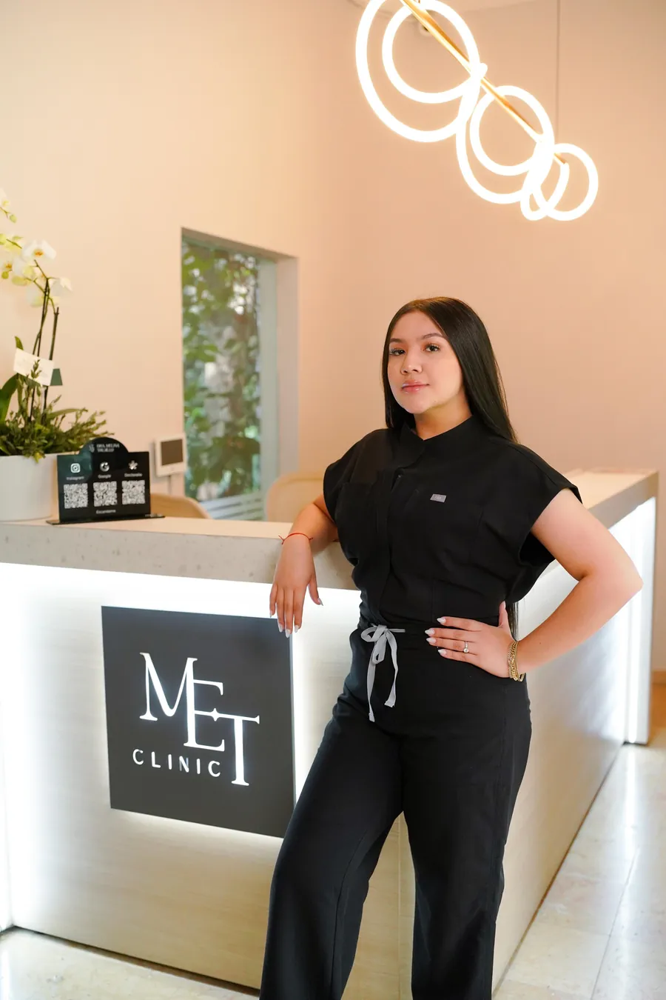

La clínica
Consultorios
y cabinas privadas.
En Guadalupe Inn, Ciudad de México. Tecnología de última generación y una boutique de dermocosmética, en una casa rodeada de jardín.



Tu experiencia
Cómo
trabajamos.
Cuatro pasos. Cero protocolos genéricos.
-
01AgendaEn Doctoralia o por WhatsApp, en la clínica o en línea. Primera consulta desde $2,100 MXN.
-
02ValoraciónCon la Dra. Melina Trujillo: te escucha, te explora y te explica beneficios, riesgos y contraindicaciones de cada opción.
-
03Plan y tratamientoUn protocolo para tu etapa, con la tecnología que de verdad necesitas, en consultorios y cabinas privadas.
-
04SeguimientoRevisamos tu evolución en consultas de seguimiento y ajustamos el plan contigo.
Ámate.
Rejuvenécete.
Rejuvenécete.
Filosofía
La medicina
como arte.
No tratamos síntomas.
Acompañamos procesos.

Tu primera consulta
empieza aquí.
Agenda en Doctoralia o escríbenos por WhatsApp; la clínica está en Guty Cárdenas 65, Guadalupe Inn.
Todo tratamiento requiere una valoración médica previa, en la que la doctora explica beneficios, riesgos y contraindicaciones. Dra. Melina Trujillo Quiroz · Cédulas profesionales 9177465 · 5574513.